Sesi 7: POSET & Hasse Diagram
Pelajari konsep Partial Order (Pengurutan Parsial), POSET, Comparable & Incomparable, Totally Ordered Set (Chain), serta langkah-langkah menggambar dan membaca Hasse Diagram.
1. Dasar-dasar POSET
Secara intuitif, relasi dapat digunakan untuk mengurutkan elemen-elemen dalam suatu himpunan. Sebagai contoh, kita dapat mengurutkan kata-kata dalam kamus berdasarkan urutan abjad, atau mengurutkan bilangan bulat berdasarkan nilainya.
Mari kita lihat beberapa contoh bagaimana relasi digunakan untuk melakukan pengurutan:
- Contoh 1 (Pengurutan Kata): Misalkan relasi $R = \{(a, b) \mid a \text{ lebih dahulu dari } b\}$ pada himpunan semua kata. Jika kita membandingkan kata $a = \text{"Kapak"}$ dan $b = \text{"Katak"}$, satu-satunya perbedaan ada pada huruf keempat ('p' dan 't'). Karena huruf 'p' berada sebelum 't' dalam alfabet, maka $(a, b) \in R$ (Kapak lebih dahulu dari Katak). Relasi ini searah dan tidak dapat dibalik.
- Contoh 2 (Pengurutan Bilangan): Misalkan relasi $R = \{(a, b) \mid a < b\}$ pada himpunan bilangan bulat $\mathbb{Z}$. Relasi ini dapat digunakan untuk mengurutkan bilangan. Kita tahu bahwa $(1, 2) \in R$ karena $1 < 2$, tetapi $(2, 1) \notin R$ karena $2 \not< 1$.
Definisi POSET (Partially Ordered Set)
Sebuah himpunan $S$ bersama dengan relasi $R$ pada $S$ disebut POSET (Partially Ordered Set) jika relasi tersebut memenuhi tiga sifat berikut:
- Refleksif (Reflexive): Untuk setiap $a \in S$, berlaku $a \preceq a$ (atau $(a, a) \in R$).
- Antisimetris (Antisymmetric): Untuk setiap $a, b \in S$, jika $a \dots b$ dan $b \dots a$, maka $a = b$.
- Transitif (Transitive): Untuk setiap $a, b, c \in S$, jika $a \dots b$ dan $b \dots c$, maka $a \dots c$.
Pasangan $(S, \preceq)$ melambangkan sebuah poset. Simbol $\preceq$ digunakan secara umum untuk melambangkan relasi partial order (tidak selalu berarti "kurang dari atau sama dengan" biasa).
Kata "partial" digunakan karena pada poset, tidak semua pasangan elemen harus memiliki hubungan relasi. Kita bisa menemukan elemen-elemen yang berdiri sendiri atau tidak dapat dibandingkan satu sama lain.
Tunjukkan bahwa relasi subset $R = \{(a, b) \mid a \subseteq b\}$ yang didefinisikan pada himpunan kuasa (power set) $P(S)$ dengan $S = \{1, 2, 3\}$ adalah sebuah POSET!
Himpunan kuasa $P(S)$ dari $S = \{1, 2, 3\}$ adalah: $$P(S) = \{\emptyset, \{1\}, \{2\}, \{3\}, \{1, 2\}, \{1, 3\}, \{2, 3\}, \{1, 2, 3\}\}$$ Untuk membuktikan $(P(S), \subseteq)$ adalah POSET, kita harus menunjukkan bahwa relasi $\subseteq$ memenuhi 3 sifat:
-
Refleksif (Reflexivity):
Ambil sebarang himpunan $a \in P(S)$. Pasti berlaku $a \subseteq a$, karena setiap himpunan selalu merupakan subset dari dirinya sendiri. Sifat refleksif terpenuhi. -
Antisimetris (Antisymmetry):
Ambil sebarang himpunan $a, b \in P(S)$. Jika $a \subseteq b$ dan $b \subseteq a$, maka sesuai dengan definisi kesamaan himpunan, haruslah $a = b$. Sifat antisimetris terpenuhi. -
Transitif (Transitivity):
Ambil sebarang himpunan $a, b, c \in P(S)$. Jika $a \subseteq b$ dan $b \subseteq c$, maka setiap elemen yang ada di $a$ juga ada di $b$, dan setiap elemen di $b$ juga ada di $c$. Maka, semua elemen di $a$ pasti berada di $c$, sehingga $a \subseteq c$. Sifat transitif terpenuhi.
Karena relasi $\subseteq$ pada $P(S)$ bersifat refleksif, antisimetris, dan transitif, maka terbukti bahwa $(P(S), \subseteq)$ merupakan sebuah POSET.
Tunjukkan bahwa relasi $R = \{(a, b) \mid a \text{ membagi } b\}$ yang didefinisikan pada himpunan $S = \{1, 2, 3, 4, 6\}$ adalah sebuah POSET!
Kita uji ketiga sifat poset untuk relasi keterbagian ($a \mid b$) pada himpunan $S$:
-
Refleksif:
Untuk setiap elemen $a \in S$, berlaku $a \mid a$ (setiap bilangan bulat positif membagi habis dirinya sendiri). Contoh: $2 \mid 2$ adalah benar karena $2/2 = 1$. Sifat refleksif terpenuhi. -
Antisimetris:
Untuk setiap $a, b \in S$, jika $a \mid b$ dan $b \mid a$, maka $a = b$. Karena semua anggota $S$ adalah bilangan bulat positif, jika $a$ membagi $b$, maka $a \le b$. Begitu juga jika $b$ membagi $a$, maka $b \le a$. Agar keduanya terpenuhi, haruslah $a = b$. Sifat antisimetris terpenuhi. -
Transitif:
Untuk setiap $a, b, c \in S$, jika $a \mid b$ dan $b \mid c$, maka $a \mid c$.
Bukti matematis:- $a \mid b \implies b = k \cdot a$ untuk suatu bilangan bulat $k$.
- $b \mid c \implies c = m \cdot b$ untuk suatu bilangan bulat $m$.
$c = m \cdot (k \cdot a) = (m \cdot k) \cdot a$.
Karena $m \cdot k$ adalah bilangan bulat, maka terbukti $a \mid c$. Sifat transitif terpenuhi.
Karena ketiga sifat poset dipenuhi oleh relasi keterbagian pada himpunan $S$, maka $(S, \mid)$ terbukti merupakan sebuah POSET.
Buktikan bahwa relasi lebih besar atau sama dengan ($\ge$) pada himpunan bilangan bulat $\mathbb{Z}$ adalah sebuah POSET!
Mari kita buktikan tiga sifat poset untuk relasi $\ge$ pada himpunan bilangan bulat $\mathbb{Z}$:
-
Refleksif:
Untuk setiap bilangan bulat $a \in \mathbb{Z}$, selalu berlaku $a \ge a$. Sifat refleksif terpenuhi. -
Antisimetris:
Untuk setiap bilangan bulat $a, b \in \mathbb{Z}$, jika $a \ge b$ dan $b \ge a$, maka satu-satunya kemungkinan secara matematis adalah $a = b$. Sifat antisimetris terpenuhi. -
Transitif:
Untuk setiap bilangan bulat $a, b, c \in \mathbb{Z}$, jika $a \ge b$ dan $b \ge c$, maka $a \ge c$. Sifat transitif terpenuhi.
Karena memenuhi sifat refleksif, antisimetris, dan transitif, maka relasi $\ge$ pada himpunan bilangan bulat $\mathbb{Z}$ terbukti merupakan sebuah POSET.
2. Comparable & Incomparable
Dalam sebuah poset, tidak semua elemen harus dapat dibandingkan satu sama lain. Dua konsep penting yang membagi hubungan antar elemen dalam poset adalah Comparable dan Incomparable.
Definisi Comparable & Incomparable
Misalkan $(S, \preceq)$ adalah sebuah poset. Dua elemen $a$ dan $b$ di dalam $S$ disebut:
- Comparable (Dapat Dibandingkan): Jika berlaku $a \preceq b$ atau $b \preceq a$.
- Incomparable (Tidak Dapat Dibandingkan): Jika berlaku $a \not\preceq b$ dan $b \not\preceq a$.
Kembali ke Contoh Soal 1, di mana kita memiliki poset himpunan kuasa $P(S)$ dari $S = \{1, 2, 3\}$ di bawah relasi inklusi $\subseteq$:
- Elemen $\{1, 3\}$ dan $\{2\}$ adalah incomparable karena $\{1, 3\} \not\subseteq \{2\}$ dan $\{2\} \not\subseteq \{1, 3\}$. Kita tidak dapat membandingkan kedua subset tersebut.
- Elemen $\{1\}$ dan $\{1, 3\}$ adalah comparable karena $\{1\} \subseteq \{1, 3\}$ bernilai benar.
Pada poset bilangan bulat positif di bawah relasi keterbagian $(\mathbb{Z}^+, \mid)$:
- Apakah bilangan bulat 3 dan 9 comparable?
- Apakah bilangan bulat 5 dan 7 comparable?
- Bilangan bulat 3 dan 9 adalah comparable karena berlaku $3 \mid 9$ (3 membagi habis 9).
- Bilangan bulat 5 dan 7 adalah incomparable karena $5 \nmid 7$ (5 tidak membagi habis 7) dan $7 \nmid 5$ (7 tidak membagi habis 5).
3. Totally Ordered Set (Chain)
Ketika sifat "parsial" pada poset hilang, artinya seluruh elemen di dalamnya dapat dibandingkan satu sama lain tanpa terkecuali, kita mendapatkan struktur linear yang disebut rantai (chain).
Definisi Totally Ordered Set (Urutan Total) / Chain
Jika $(S, \preceq)$ adalah sebuah poset di mana setiap dua elemen di dalam $S$ bersifat comparable, maka $S$ disebut sebagai totally ordered set (atau disebut juga linear order atau chain / rantai).
- POSET Biasa: Boleh mengandung elemen-elemen yang incomparable (seperti relasi keterbagian $\mid$ atau subset $\subseteq$). Representasi grafisnya dapat bercabang-cabang dan terpisah.
- Chain (Linear Order): Tidak ada elemen yang incomparable. Semua elemen saling berhubungan secara linear, membentuk satu garis vertikal lurus dari bawah ke atas.
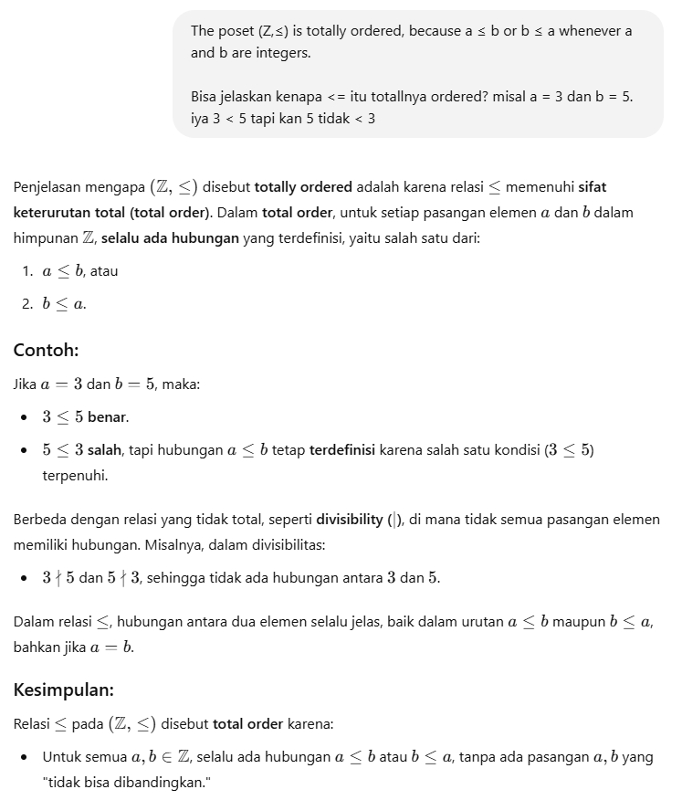
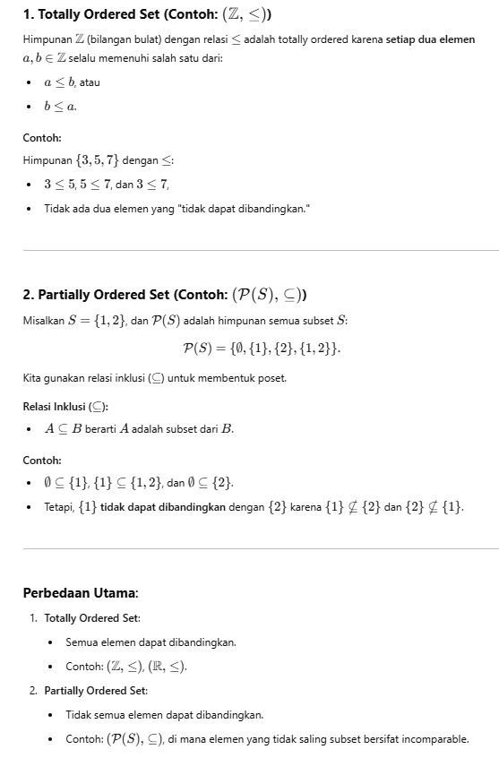
Tunjukkan bahwa poset $(\mathbb{Z}, \le)$ (himpunan bilangan bulat dengan relasi kurang dari atau sama dengan) merupakan sebuah totally ordered set (chain)!
Untuk membuktikan $(\mathbb{Z}, \le)$ merupakan totally ordered set, kita harus memastikan bahwa:
-
$(\mathbb{Z}, \le)$ adalah POSET:
Relasi $\le$ terbukti memenuhi sifat refleksif ($a \le a$), antisimetris (jika $a \le b$ dan $b \le a \implies a=b$), serta transitif (jika $a \le b$ dan $b \le c \implies a \le c$). -
Setiap dua elemen bersifat comparable:
Ambil sebarang dua bilangan bulat $a, b \in \mathbb{Z}$. Sesuai hukum trikotomi matematika, pasti berlaku salah satu dari kemungkinan: $$a < b, \quad a = b, \quad \text{atau} \quad a > b$$ Dalam semua kasus tersebut, kita selalu dapat menyimpulkan bahwa $a \le b$ atau $b \le a$ bernilai benar. Oleh karena itu, setiap dua elemen di $\mathbb{Z}$ pasti comparable.
Karena kedua syarat terpenuhi, maka $(\mathbb{Z}, \le)$ terbukti merupakan sebuah totally ordered set (chain).
4. Hasse Diagram
Menggambarkan relasi POSET menggunakan directed graph (graf berarah) lengkap seringkali menghasilkan visualisasi yang rumit dan penuh dengan garis redundant (seperti lingkaran self-loop pada setiap verteks dan garis transitif yang bertumpuk). Diagram Hasse adalah penyederhanaan dari directed graph POSET yang hanya mempertahankan hubungan-hubungan penting.
Penyederhanaan directed graph menjadi Diagram Hasse didasarkan pada tiga asumsi:
- Hilangkan Self-loop: Karena relasi POSET bersifat refleksif, setiap verteks pasti terhubung dengan dirinya sendiri. Kita tidak perlu menggambarnya karena sifat ini sudah diasumsikan.
- Hilangkan Garis Transitif (Transitivity Edges): Jika terdapat relasi $a \preceq b$ dan $b \preceq c$, maka garis langsung dari $a$ ke $c$ dihapus karena hubungan tersebut sudah terwakili oleh rantai $a \to b \to c$.
- Hilangkan Arah Panah: Diagram Hasse selalu digambar dengan arah dari bawah ke atas (elemen yang lebih kecil secara relasi berada di bawah, dan elemen yang lebih besar berada di atas). Dengan kesepakatan arah ini, anak panah tidak perlu digambar.
Langkah-langkah Menggambar Diagram Hasse:
- Pastikan relasi merupakan POSET.
- Daftarkan semua pasangan elemen yang ada dalam relasi $R$.
- Gambahkan graf berarah (directed graph) dengan menyusun verteks dari bawah ke atas (dari yang kecil ke besar).
- Hilangkan semua self-loop pada setiap verteks.
- Hilangkan semua garis transitif.
- Hapus tanda panah pada ujung garis, sehingga tersisa segmen garis penghubung biasa.
Gambarkan Hasse Diagram untuk himpunan $S = \{1, 2, 4, 6, 8\}$ dengan relasi $R = \{(a, b) \mid a \text{ membagi } b\}$. Tunjukkan langkah demi langkah pembuatannya!
Langkah 1: Cek Sifat POSET
Relasi keterbagian pada bilangan bulat positif terbukti memenuhi sifat refleksif, antisimetris, dan transitif. Maka $(S, \mid)$ adalah POSET.
Langkah 2: Tentukan Pasangan Anggota Relasi R
$$R = \{(1, 1), (2, 2), (4, 4), (6, 6), (8, 8), (1, 2), (1, 4), (1, 6), (1, 8), (2, 4), (2, 6), (2, 8), (4, 8)\}$$
Langkah 3: Gambar Directed Graph Awal (Dengan Self-loop & Transitivitas)
Pertama, gambarkan relasi refleksif pada setiap verteks:
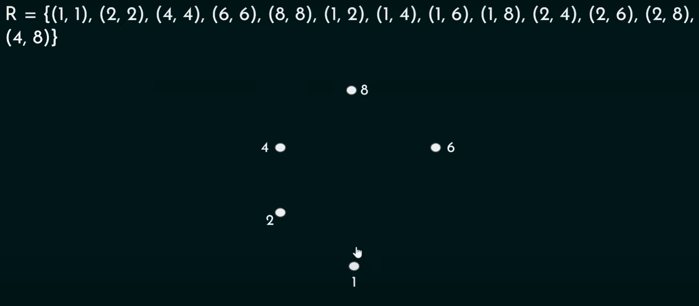
Lalu gambarkan semua garis relasi berarah lengkap:
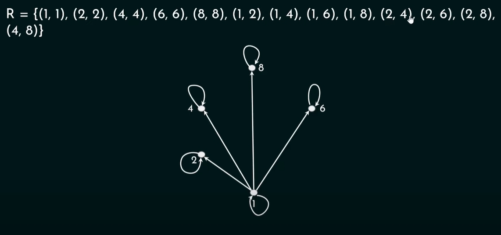
Langkah 4: Hilangkan Semua Self-Loop
Hapus loop melingkar di setiap titik karena sifat refleksif sudah pasti ada:
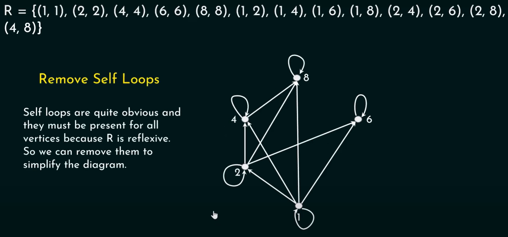
Langkah 5 & 6: Hilangkan Garis Transitif & Arah Panah (Diagram Hasse Final)
Hapus garis relasi transitif. Contohnya:
- Karena $1 \mid 2$ dan $2 \mid 4$, maka garis transitif $1 \to 4$ dihapus.
- Garis transitif $1 \to 8$ dan $2 \to 8$ dihapus karena sudah diwakili jalur rantai $1 \to 2 \to 4 \to 8$.
- Garis transitif $1 \to 6$ dihapus karena sudah diwakili jalur rantai $1 \to 2 \to 6$.
Setelah itu, hapus tanda panah. Susunan finalnya adalah:
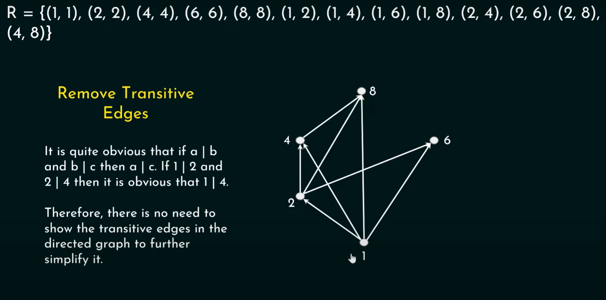
Analisis Diagram Final:
Angka 1 berada di paling bawah. Dari 1 ditarik garis ke 2.
Dari 2, diagram bercabang menjadi dua jalur: satu jalur lurus ke 6, dan jalur lainnya ke 4 kemudian ke 8.
Perhatikan bahwa tidak ada garis yang menghubungkan 6 dan 8 karena $6 \nmid 8$ dan $8 \nmid 6$.
Gambarkan Hasse Diagram yang merepresentasikan Partial Ordering $R = \{(a, b) \mid a \le b\}$ pada himpunan $S = \{1, 2, 3, 4\}$!
Langkah 1: Daftarkan Anggota Relasi R
$$R = \{(1, 1), (2, 2), (3, 3), (4, 4), (1, 2), (1, 3), (1, 4), (2, 3), (2, 4), (3, 4)\}$$
Langkah 2: Visualisasikan Proses Penyederhanaan
Berikut adalah gambar graf berarah lengkap dengan loop:
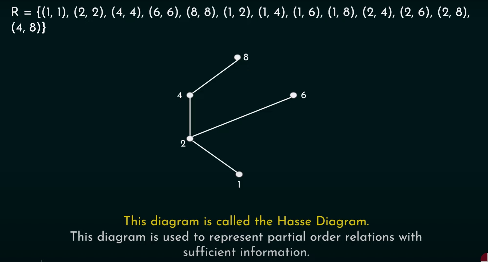
Proses penghapusan self-loop:
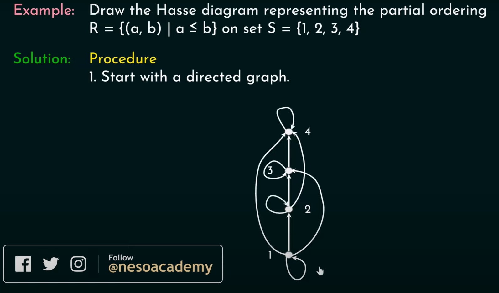
Proses penghapusan garis transitif:
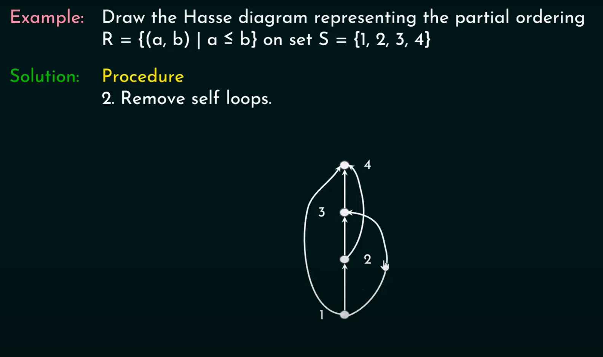
Langkah 3: Diagram Hasse Final
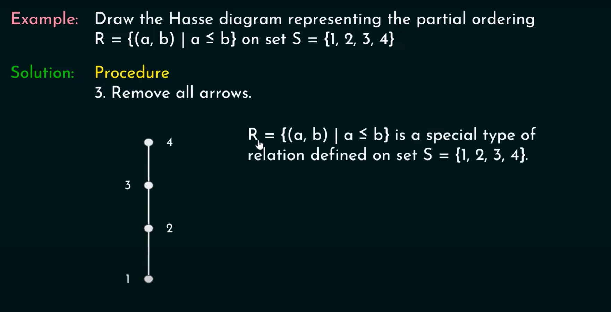
Analisis:
Karena poset ini merupakan totally ordered set (chain), diagram Hasse yang terbentuk berupa satu garis lurus vertikal: $1 - 2 - 3 - 4$.
Semua elemen terhubung secara linear dari bawah ke atas.
Gambarlah Hasse Diagram untuk relasi "lebih besar atau sama dengan" ($\ge$) pada himpunan $S = \{0, 1, 2, 3, 4, 5\}$!
Karena relasi yang digunakan adalah $\ge$ (lebih besar atau sama dengan), maka elemen yang secara numerik bernilai lebih besar akan bertindak sebagai elemen yang "lebih besar" dalam poset, sehingga ditempatkan di tingkat yang lebih tinggi.
1. Directed Graph Awal:
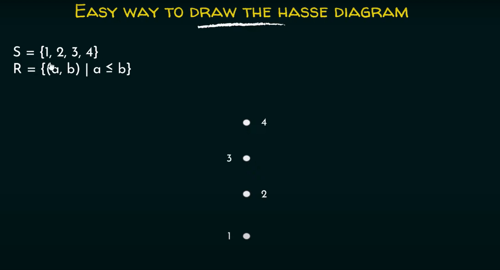
2. Proses Penghapusan Garis Transitif:
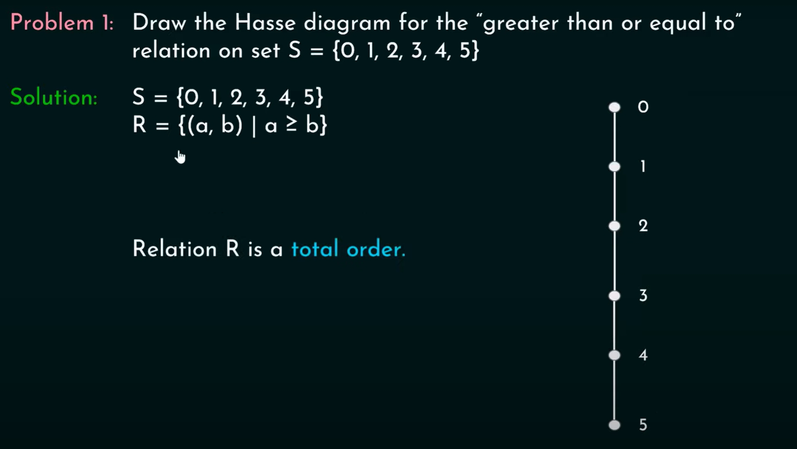
3. Diagram Hasse Final:
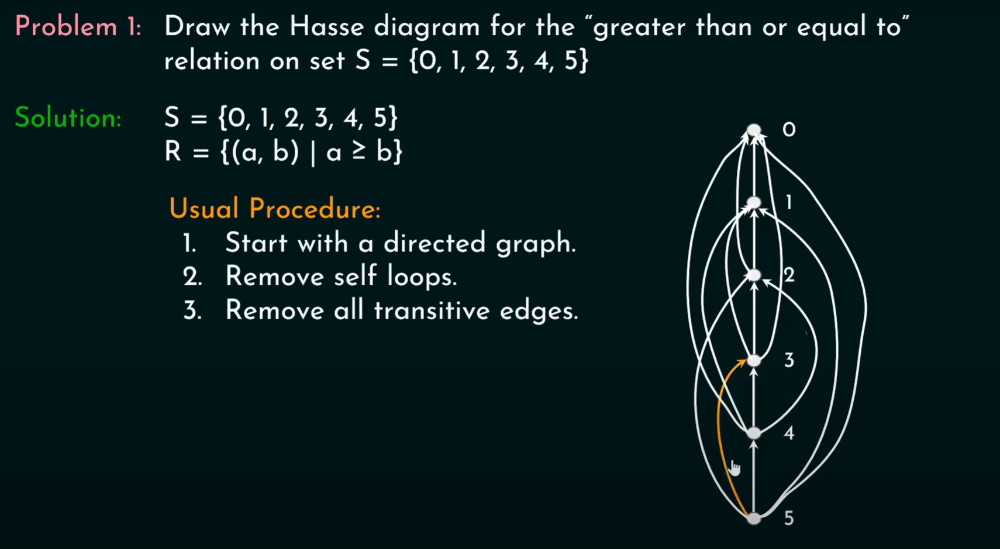
Analisis Struktur:
Diagram Hasse final berbentuk rantai linear vertikal tunggal: $5 - 4 - 3 - 2 - 1 - 0$.
Verteks 5 berada di paling atas karena merupakan elemen terbesar, sedangkan 0 berada di paling bawah sebagai elemen terkecil dalam relasi $\ge$.
Gambarlah Hasse Diagram untuk relasi "habis membagi" ($a \mid b$) pada himpunan: $$S = \{2, 3, 5, 10, 11, 15, 25\}$$
Untuk menggambar Hasse diagram dari relasi keterbagian pada himpunan ini, ikuti analisis berikut:
-
Identifikasi Elemen Minimal (Tingkat Bawah):
Elemen minimal adalah elemen yang tidak dibagi oleh elemen lain di $S$ (selain dirinya sendiri). Elemen tersebut adalah 2, 3, 5, dan 11. Letakkan di tingkat terbawah. -
Petakan Hubungan Keterbagian Langsung (Covering):
- $2 \mid 10$ dan $5 \mid 10$ $\implies$ Tarik garis dari 2 ke 10, dan dari 5 ke 10.
- $3 \mid 15$ dan $5 \mid 15$ $\implies$ Tarik garis dari 3 ke 15, dan dari 5 ke 15.
- $5 \mid 25$ $\implies$ Tarik garis dari 5 ke 25.
- Angka 11 tidak membagi angka lain dan tidak dibagi angka lain. Maka 11 menjadi elemen terisolasi.
-
Tingkat Menengah/Atas:
Elemen 10, 15, dan 25 diletakkan di tingkat atas.
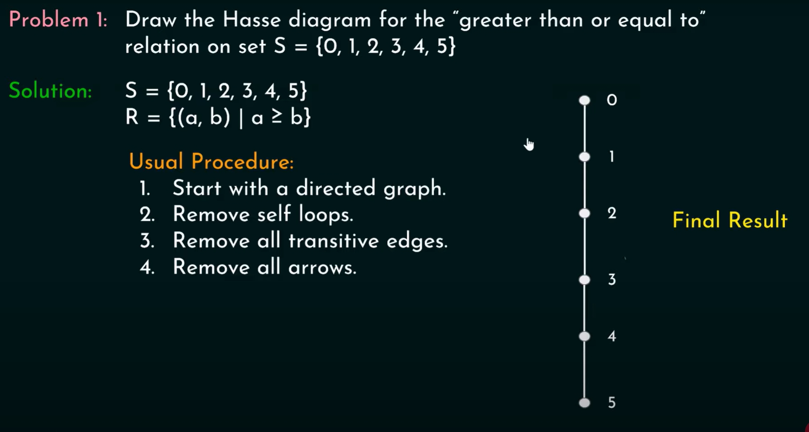
Analisis Struktur:
Angka 11 digambar sebagai titik terisolasi di sisi samping tanpa garis penghubung.
Angka 5 membagi tiga elemen berbeda (10, 15, 25), sehingga memiliki tiga garis cabang naik ke atas.
Angka 10 menerima garis masuk dari 2 dan 5, sedangkan 15 menerima garis masuk dari 3 dan 5.
Gambarkan Hasse Diagram untuk relasi inklusi (subset $\subseteq$) pada himpunan kuasa $P(S)$ dari himpunan $S = \{a, b, c\}$!
Himpunan kuasa $P(S)$ memiliki $2^3 = 8$ subset. Kita susun subset-subset tersebut secara vertikal berdasarkan jumlah anggotanya (kardinalitas):
- Tingkat 0 (Dasar): Himpunan kosong $\emptyset$ (0 anggota).
- Tingkat 1 (Middle-Bottom): Himpunan dengan 1 anggota: $\{a\}, \{b\}, \{c\}$.
- Tingkat 2 (Middle-Top): Himpunan dengan 2 anggota: $\{a, b\}, \{a, c\}, \{b, c\}$.
- Tingkat 3 (Teratas): Himpunan semesta $\{a, b, c\}$ (3 anggota).
Hubungkan setiap subset dengan garis ke subset di tingkat atasnya jika subset di bawah merupakan bagian (subset langsung) dari yang di atas:
- $\emptyset$ terhubung ke $\{a\}, \{b\}, \{c\}$.
- $\{a\}$ terhubung ke $\{a, b\}$ dan $\{a, c\}$.
- $\{b\}$ terhubung ke $\{a, b\}$ dan $\{b, c\}$.
- $\{c\}$ terhubung ke $\{a, c\}$ dan $\{b, c\}$.
- $\{a, b\}, \{a, c\}, \{b, c\}$ semuanya terhubung ke $\{a, b, c\}$.
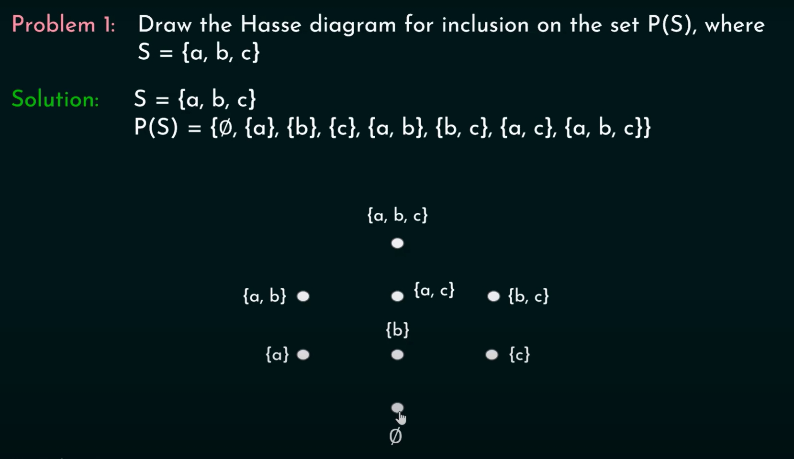
Analisis Struktur:
Diagram Hasse ini membentuk struktur visual kubus tiga dimensi. Struktur ini sangat simetris dan merupakan representasi grafis standar dari Latis Boolean berorde 3.
Daftarkan (list) semua pasangan terurut dalam relasi $R$ yang direpresentasikan oleh Hasse Diagram berikut!
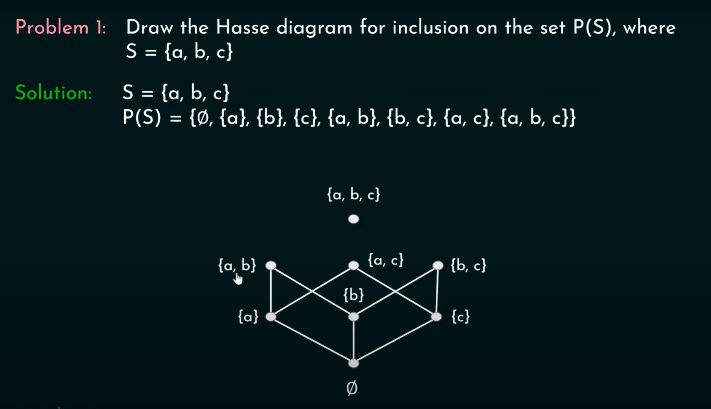
Untuk mengembalikan Hasse Diagram menjadi daftar pasangan relasi lengkap $R$, kita harus menerapkan kembali sifat Refleksif dan Transitif dari poset yang sebelumnya dihilangkan.
Langkah 1: Sifat Refleksif (Self-relationship)
Setiap elemen berhubungan dengan dirinya sendiri. Tambahkan pasangan $(x, x)$ untuk setiap titik yang ada di diagram.
Langkah 2: Hubungan Langsung (Covering)
Setiap garis penghubung dari verteks bawah $x$ ke verteks atas $y$ mewakili relasi $(x, y)$.
Langkah 3: Sifat Transitif (Jalur Naik/Reachability)
Jika kita dapat bergerak dari verteks $x$ naik ke verteks $y$ melalui satu atau beberapa segmen garis (meskipun tidak ada garis langsung), maka $(x, y)$ termasuk dalam relasi $R$.
Mari kita lihat visualisasi analisis jalurnya pada gambar di bawah ini:
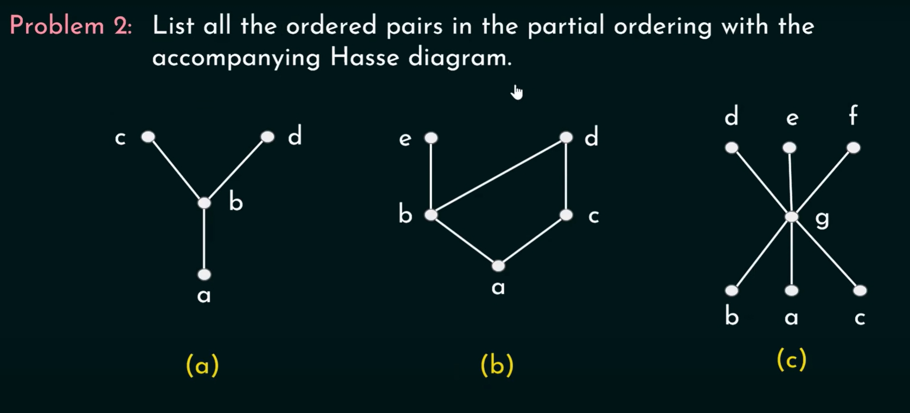
Daftar lengkap pasangan terurut (Ordered Pairs) yang diperoleh:
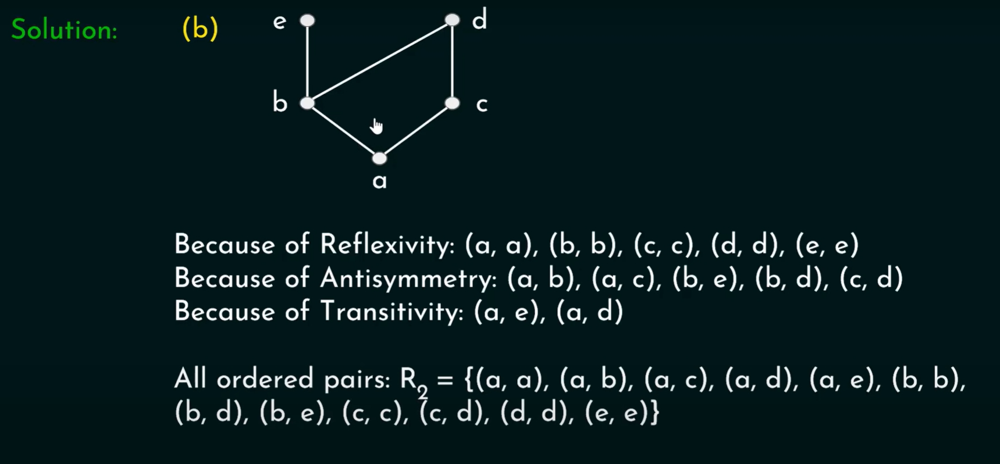
Dengan menggabungkan seluruh pasangan refleksif, hubungan langsung, dan hubungan transitif (jalur naik), kita mendapatkan seluruh pasangan terurut relasi secara lengkap sebagaimana tertera pada gambar solusi di atas.